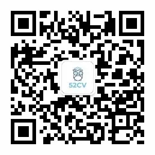

AI派
AI派专注于分享人工智能领域知识，包括但不限于机器学习、深度学习、数据分析、 自然语言处理、推荐系统等。致力于推进人工智能平民化，让每一个感兴趣的人都 可以借助人工智能去做一些有意义的事情。
AI有道
一个有情怀、有良心的公众号。AI领域机器学习、深度学习等知识集中营，干货满满。 期待与你共同进步！
算法爱好者
算法是程序员的内功！「算法爱好者」专注分享算法相关文章、工具资源和算法题， 帮程序员修炼内功。
CVer
一个专注侃侃计算机视觉方向的公众号。计算机视觉、图像处理、机器学习、深度 学习、C/C++、Python、诗和远方等。
OpenCV学堂
一个致力于计算机视觉OpenCV原创技术传播的公众号！OpenCV计算机视觉与 tensorflow深度学习相关算法原创文章分享、函数使用技巧、源码分析与讨论、， 计算机视觉前沿技术介绍，技术专家经验分享，人才交流，学习交流。
机器人与智能系统研究院
以我之微光，点亮AI之星辰！
机器学习算法工程师

机器学习、深度学习、数据挖掘等人工智能领域的技术实战干货文章，这里都有！ 分享从业经验是我们的不变的准则……
机器学习算法与Python学习
作为沟通学习的平台，发布机器学习与数据挖掘、深度学习、Python实战的前沿与动 态，欢迎机器学习爱好者的加入，希望帮助你在AI领域更好的发展，期待与你相遇！
机器学习算法与自然语言处理
一个有情怀的公众号。机器学习、自然语言处理、算法等知识集中营、期待与你相遇~
计算机视觉life
兼具系统性、严谨性、易读性，分享计算机视觉、机器学习、人工智能及相关领域 前沿资讯、技术干货、产业理解。
计算机视觉战队
主要由来自于大学的研究生组成的团队，本平台从事机器学习与深度学习领域，主 要在人脸检测与识别，多目标检测研究方向。本团队想通过计算机视觉战队平台打 造属于自己的品牌，让更多相关领域的人了解本团队，结识更多相关领域的朋友， 一起来学习，共同进步！
趣谈编程
分享编程世界的点点滴滴
人工智能与大数据精选
python、人工智能、机器学习、区块链等热门技术分享
深度学习这件小事
机器学习算法、深度学习算法、自然语言处理等干货知识集中营
视学算法

专注于机器学习和算法研究，学术热点的讲解分享。这儿有资源，有路线，有技术， 有段子，就差你一个。
我爱计算机视觉
关注计算机视觉与机器学习技术的最前沿，“有价值有深度”，分享开源技术与最新 论文解读，传播CVML技术的业内最佳实践。实践。www.52cv.net 微博: 微博:计算 机视觉与机器学习，QQ群:928997753，52CV君个人账号：Your-Word。
小詹随笔
「小詹随笔」小詹是一名双一流高校在读研究生，主要研究图像处理、计算机视觉 和机器学习相关知识。本公号分享技术笔记之外，同时记录学习过程中的一些心得 和在大学最后阶段的一些感悟认知和自我提升。
进击的Coder
为广大Coder们奉上精彩博文和学习资料。推送包括爬虫、Python、PHP、Java、 C/C++、机器学习，大数据等等方面的资源。还会不定期放送各种福利哦~ 进击吧， Coder们，么么哒！
编程与算法之美
计算机基础知识、编程技巧、算法等干货集中营，期待与你相遇！
Python与机器学习算法频道
一个真正讨论技术的公众号，纯享干货社区，几乎所有文章都为原创：程序员必知 算法、Python, Pandas、机器学习、深度学习、TensorFlow 、NLP、面试汇总 、 精华资料 、打卡互助群。
深度学习自然语言处理
一个从大三就接触NLP的小小NLPer，本公众号每天记录自己的一点一滴，每篇文章 最后也有托福单词等新知识，学技术同时，也一点一滴积累额外的知识。期待与你在 知识的殿堂与你相遇！
磐创AI
AI行业最新动态，机器学习干货文章，深度学习原创博客，深度学习实战项目， Tensorflow中文原创教程，国外最新论文翻译。欢迎喜欢AI、关注深度学习的 小伙伴加入我们。
进击的Coder
为广大Coder们奉上精彩博文和学习资料。推送包括爬虫、Python、PHP、Java、 C/C++、机器学习，大数据等等方面的资源。还会不定期放送各种福利哦~ 进击吧， Coder们，么么哒！
编程与算法之美
计算机基础知识、编程技巧、算法等干货集中营，期待与你相遇！
Python与机器学习算法频道
一个真正讨论技术的公众号，纯享干货社区，几乎所有文章都为原创：程序员必知 算法、Python, Pandas、机器学习、深度学习、TensorFlow 、NLP、面试汇总 、 精华资料 、打卡互助群。
深度学习自然语言处理
一个从大三就接触NLP的小小NLPer，本公众号每天记录自己的一点一滴，每篇 文章最后也有托福单词等新知识，学技术同时，也一点一滴积累额外的知识。期 待与你在知识的殿堂与你相遇！
菜鸟名企梦
分享求职干货：经典面试算法、源码分析、面试常考知识点、求职面试注意事项等。
机器人与智能系统研究院
以我之微光，点亮AI之星辰！
挑战算法与程序设计
定期分析程序挑战类与面试类算法，分享有趣的源码，重于思想的培养，带你 入门算法与程序设计，扎实基本功。千里之行，始于足下。
人工智能爱好者社区
专注人工智能、人脸识别、自然语言处理、图形识别等顶尖技术前沿科技成果 研究、实战技巧。立即关注，掌握人工智能最新资讯与成果。
程序员乔戈里
本人哈工大本硕计算机，百度java后台开发工程师，专注分享校园招聘/求职面试 干货，以及在百度的java学习成长的经历分享
机器学习与python集中营
“早春江上雨初晴，杨柳丝丝夹岸莺。画舫烟波双桨急，小桥风浪一帆轻”，这 是机器通过学习中华诗词然后以”早春“为题所写的一首诗。很多人非常恐惧AI 的发展对人类的冲击，但我坚信AI会让世界变得更加美好，生活是美好的，所 以我们一起，勇敢AI吧！